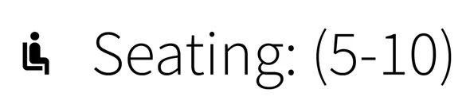
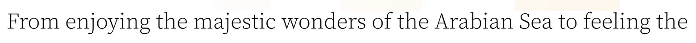

Type, as measured

40 pxFilters, starting rates and most buttons. The filters use a light sans.
25 pxRunning text and the one-line boat descriptions. A serif.Sizes are measured from the design at 1920 px wide. The samples are cut from the page and shown at 80% of that size, all to the same scale. Two smaller sizes, 20 and 18 px, appear only in the featured boat's details and the utility bar.